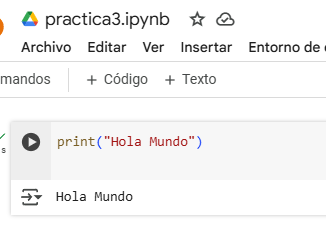

¿Cuáles son las características de Python?
- Un lenguaje interpretado. Python es un lenguaje interpretado, lo que significa que ejecuta directamente el código línea por línea.
- Un lenguaje fácil de utilizar.
- Un lenguaje tipeado dinámicamente.
- Un lenguaje de alto nivel.
- Un lenguaje orientado a los objetos.
Tipos de datos
- Numéricos: int, float, complex
- Cadenas: str
- Secuencias: list, tuple, range
- Binarios: bytes, bytearray, memoryview
- Diccionarios: dict
- Booleanos: bool
- Conjuntos: set, frozenset
Ventajas y desventajas
Ventajas
- Legibilidad: Utiliza palabras similares al inglés y sangría en lugar de llaves.
- Versatilidad: Es un lenguaje de alto nivel que admite varios tipos de programación.
- Ecosistema de bibliotecas: Cuenta con una amplia base de bibliotecas para casi cualquier tarea.
- Licencia gratuita: Es de código abierto, por lo que se puede usar y distribuir libremente.
- Portabilidad: Funciona en cualquier ordenador.
- Comunidad: Cuenta con una comunidad grande y solidaria.
Desventajas
- Velocidad: Puede ser más lento que lenguajes compilados como C++.
- Consumo de memoria: Puede ser más intensivo en memoria que otros lenguajes.
- Compatibilidad: Carece de compatibilidad con entornos móviles, acceso a bases de datos y multihilo.
- Rendimiento: Puede ser insuficiente para aplicaciones que requieren rendimiento en tiempo real.
Impresion de hola mundo

print("Hola, mundo!")